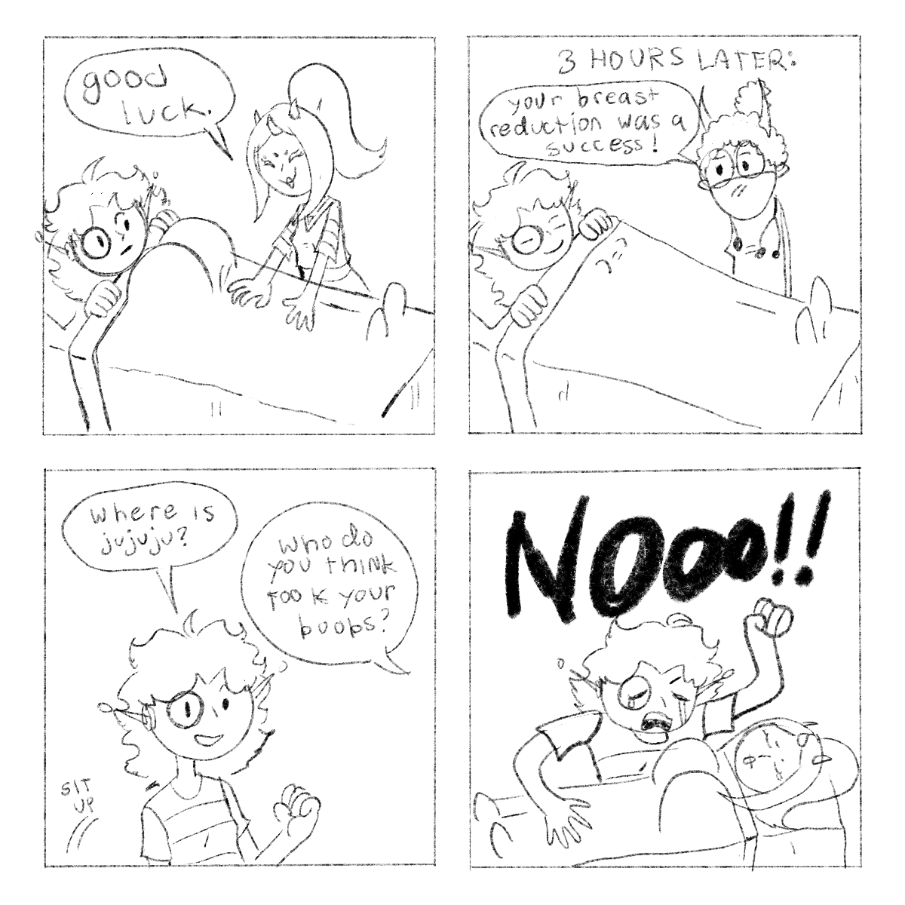
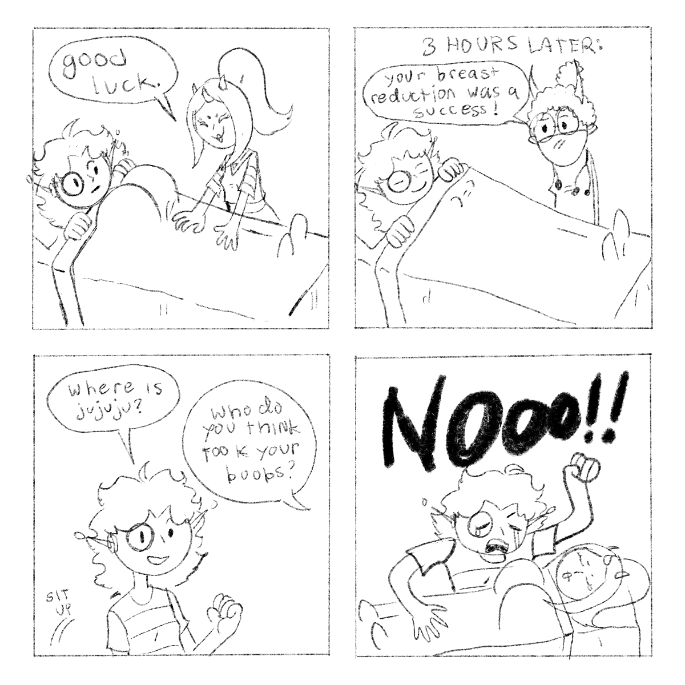

Wanna see some extra art and behind the scenes? Here you will find an assortment of prototypes and early designs plus some extra current bonus art!
Click on an image to see it full sized.
==================================
TCMC CONCEPT DESIGNS
==================================
A nice collection of concept arts I've drawn throughout creating TCMC.
TCMC CONCEPT DESIGNS
==================================
This image of derrek was an original render for the character profiles page before I decided to do wanted posters instead.
All outfit concepts so far, I whip up a small little outfit design before committing it.


==================================
EARLY CHEVER DESIGNS
==================================
Check out some early designs of the Cerulean Snake!EARLY CHEVER DESIGNS
==================================
First ever Image I drew of Chever "The Cerulean Snake" Stalii. This was drawn back in 2011, Making them 10+ years old, jesus fuck!

Snake has gone through a few redesigns, and was once even a seadweller. I ultimately settled on a final design as a cerulean.


==================================
EARLY CERULEAN MOTLEY CREW DESIGNS
==================================
Here is some of my earlier character designs for the crew!
EARLY CERULEAN MOTLEY CREW DESIGNS
==================================
Final design for Snake

A mock up of the crew. You can see some differences in the final product.

Some more mockups.


Back to top
==================================
HOW I DRAW
==================================
Wanna see how I draw the panels? Here's a couple fun videos.HOW I DRAW
==================================
All of my panels are designed in Procreate on an iPad pro 12" and animated in Photoshop CS6 Extended. Click on the videos to play them.
==================================
SAHCON TRAILERS
==================================
The Stuck At Home Convention is an event where
many Homestuck fans
gather for a digital convention,
on the friday evening they hold a fan showcase with creator trailers. Here is my
submissions, click on the videos to play!
SAHCON TRAILERS
==================================
==================================
GROUPSHOT COLLABORATIONS
==================================
Every year MSPFA holds groupshots, I had been participating since 2021, You can find all
past groupshots here. These are the parts I
drew.
GROUPSHOT COLLABORATIONS
==================================
 and Michua & Cuezol from Tragedy on Alternia (drawn by Fruz)")

==================================
TCMC MEMES
==================================
Some random ass junk I have drawn or collected just for the hell of it.
TCMC MEMES
==================================


 

Back to top